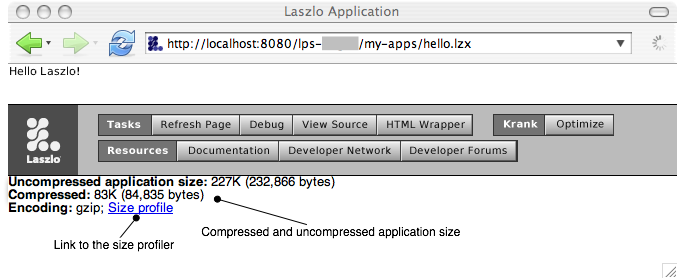

Performance Monitoring and Tuning
In this chapter we'll look at various ways to detect and address sources of poor performance. You may also want to investigate the OpenLaszlo Wiki, where developers discuss advanced techniques, including unofficial and unsupported tools such as the call profiler.
size profiler stuff
This chapter discusses ways to measure the performance of your Laszlo
client code and gives some tips for more efficient coding.
Be sure also to see , which includes explanations of many useful techniques, such as tracing, backtracing, memory leak detection and object inspection, for finding performance problems.
Time Measurement
Simple timing measurements can be made using (new
Date).getTime(), which will return a millisecond time. You
can use Debug.write or Debug.log to output
timing data. Here is a simple framework illustrating how you can use
this to measure the cost of certain operations. A more complete
framework is available by including utils/performance.
<canvas height="150" debug="true">
<script>
var trials = 30;
function measure (target, iterations, description, trials, empty) {
// Default arguments
switch (arguments.length) {
case 0:
Debug.write("No measurement target");
return;
case 1:
iterations = 500;
case 2:
description = null;
case 3:
trials = 10;
case 4:
empty = function () {
for (var i = 0; i < iterations; ) i++;
}
}
// Compute overhead
var overhead = 0;
var total = 0;
for (var j = 0; j < trials; j++) {
var start = (new Date).getTime();
empty();
var end = (new Date).getTime();
overhead += end - start;
// Measure target
var start = (new Date).getTime();
target();
var end = (new Date).getTime();
total += end - start;
}
var usPerOp = Math.round((total-overhead)*1000/(trials*iterations));
// Report results
if (description != null) {
Debug.write(description + ": " + usPerOp + "us");
}
return usPerOp;
}
// What we want to measure
var iterations = 100;
function stringConcatenation () {
for (var i = 0; i < iterations; i++) {
"foo" + "bar";
}
}
// Measure it
measure(stringConcatenation, iterations, "String concatenation");
</script>
</canvas>
Because Date.getTime is based on the real time clock,
measurements using it can be deceiving: the runtime may choose to
execute maintenance tasks during your measurement period (for
instance, garbage collection) and the operating system may share the
processor with other applications during your measurement period. The
utils/performance library uses a slightly more
sophisticated meter that accumulates both a mean time, standard
deviation, and min and max times. In the examples below, the meters
are presented as: mean ±std. dev.
[minimum..maximum]/trials. For the purposes
of measuring the relative performance of two different techniques,
comparing the minimum times of a large number of trials is probably
the most accurate.
You will see that in both the example framework and the performance
library that we accumulate statistics in two loops: a short-term loop
to ameliorate the overhead of getting the time, and a long-term loop
to minimize the perturbation due to background or other processes.
Be sure to do your testing on your most difficult target. Clients
with the Flash 6 player installed will be slower than those with the
Flash 7 player installed. Macintosh clients will, in general, be
slower than Windows clients. Most of the advice in this chapter holds
across all players and platforms, but by viewing the examples on the
particular client of interest, you can see exactly how important the
advice is.
JavaScript Performance
Like most programming languages, Javascript often can express the same
algorithm in a number of different ways. Below are some tips on
choosing the more efficient of those ways.
Variables
Use local variables rather than global
Local variables are faster to access than global variables, so global
variables should only be used when necessary. In particular, watch
out for erroneously writing for (i in ...) when you
really mean for (var i in ...); similarly, for (i =
0; i < ...; i++) will be less efficient than for (var
i = 0; i < ...; i++). [In addition you are liable to
clobber an important global variable if you forget to use the
var declaration in a for loop.]
The example below uses the performance Measurement utility to
illustrate the difference between incrementing a global variable and a
local variable.
<canvas height="150">
<include href="utils/performance" />
<script>
var iterations = Measurement.defaultIterations;
function empty () {
for (var i = 0; i < iterations; i++) {}
}
var j = 0;
function globalReference () {
for (var i = 0; i < iterations; i++) {j++}
}
function localReference() {
var k = 0;
for (var i = 0; i < iterations; i++) {k++}
}
(new Measurement({'Global reference': globalReference,
'Local reference': localReference,
'empty': empty})).run();
</script>
</canvas>
Cache constant global references
If you need to access a global reference many times that you know will
not change, create a local reference and use that instead.
<canvas height="150">
<include href="utils/performance" />
<script>
var iterations = Measurement.defaultIterations;
var j;
function empty () {
for (var i = 0; i < iterations; i++) {
j = i;
}
}
function globalReference () {
for (var i = 0; i < iterations; i++) {
j = Math.PI;
}
}
function cachedGlobalReference() {
var PI = Math.PI;
for (var i = 0; i < iterations; i++) {
j = PI;
}
}
(new Measurement({'Global reference': globalReference,
'Cached global reference': cachedGlobalReference,
'empty': empty})).run();
</script>
</canvas>
Arrays
For an array A, A.push(b) is more expensive
than A[A.length] = b, which in turn is more expensive
than A[i] = b (i.e., if you already had the current
length of the array in a variable).
Allocating an array in advance, when you know how many elements it
will eventually hold, makes no difference on existing runtime
platforms, because arrays are just objects that maintain a length
field.
Note that if you do not need to know how many elements are in the array, using an object can be slightly more efficient, because it does not have to maintain the lenght field.
The example below illustrates the various ways of adding elements to an array.
<canvas height="150">
<include href="utils/performance" />
<script>
var iterations = Measurement.defaultIterations;
var textIndexes={};
for (var i = 0; i < iterations; i++) {
textIndexes[i] = i.toString();
}
function empty () {
var testArray = [];
for (var j in textIndexes ) {
;
}
}
function measurePush () {
var testArray = [];
for (var j in textIndexes ) {
testArray.push(j);
}
}
function measureSetAtLength () {
var testArray = [];
for (var j in textIndexes) {
testArray[testArray.length] = j;
}
}
function measureSetAtIndex () {
var testArray = [];
for (var j in textIndexes) {
testArray[j] = j;
}
}
function measureSetAtIndexPreallocated () {
var testArray = new Array(iterations);
for (var j in textIndexes) {
testArray[j] = j;
}
}
function measureObjectSetAtIndex () {
var testObject = {};
for (var j in textIndexes) {
testObject[j] = j;
}
}
(new Measurement({'Array.push': measurePush,
'Array[Array.length] =': measureSetAtLength,
'Array[index] =': measureSetAtIndex,
'Array[index] = (preallocated)':
measureSetAtIndexPreallocated,
'Object[key] =': measureObjectSetAtIndex,
'empty': empty})).run();
</script>
</canvas>
Loops
In older players, while loops are slightly more efficient than for ... in loops which are slightly more efficent than for loops. The difference is not enough that you should contort your code, but if any will work equally well, you should choose accordingly.
<canvas height="150">
<include href="utils/performance" />
<script>
var iterations = Measurement.defaultIterations;
var testIndexes={};
for (var i = 0; i < iterations; i++) {
testIndexes[i] = i.toString();
}
function empty () {
}
function measureFor () {
for (var j = 0; j < iterations; j++ ) {
testIndexes[j];
}
}
function measureForIn () {
for (var j in testIndexes ) {
testIndexes[j];
}
}
function measureWhile () {
var j = 0;
while (j < iterations) {
testIndexes[j++];
}
}
(new Measurement({'for': measureFor,
'for in': measureForIn,
'while': measureWhile,
'empty': empty})).run();
</script>
</canvas>
Conditionals
Using a cascade of if statements is slightly more efficient that using
the equivalent logical operators. This is a bug that will be fixed in
a future release, so you should not contort your code unless
absolutely necessary.
Is this really a bug? What about switch — is this faster?
<canvas height="150">
<include href="utils/performance" />
<script>
var iterations = Measurement.defaultIterations;
var a = false;
var b = true;
var c = true;
function empty () {
for (var i = 0; i < iterations; i++) {
if (a == false) {};
}
}
function measureLogicalAnd () {
for (var i = 0; i < iterations; i++) {
if (a && b && c) {}
}
}
function measureIfProduct () {
for (var i = 0; i < iterations; i++) {
if (a) {
if (b) {
if (c) {}
}
}
}
}
var d = true;
var e = false;
var f = false;
function measureLogicalOr () {
for (var i = 0; i < iterations; i++) {
if (d || e || f) {}
}
}
function measureIfSum () {
for (var i = 0; i < iterations; i++) {
if (c) {}
else if(d) {}
else if (e) {}
}
}
(new Measurement({'Logical And': measureLogicalAnd,
'If Product': measureIfProduct,
'Logical OR': measureLogicalOr,
'If Sum': measureIfSum,
'empty': empty})).run();
</script>
</canvas>
with
The use of with does not appear to affect performance, so it is a stylistic choice.
Tucker, is this true?
<canvas height="150">
<include href="utils/performance" />
<script>
var iterations = Measurement.defaultIterations;
var testObj = {a: 1, b: 2, c: 3, d: 4, e: 5, f: 6};
function e () {
return 0;
}
function empty () {
for (var i = 0; i < iterations; i++)
testObj.e();
}
function withThis () {
with (this) {return a + b + c + d + e + f};
}
function measureWithThis () {
for (var i = 0; i < iterations; i++)
testObj.withThis();
}
function thisDot () {
return this.a + this.b + this.c + this.d + this.e + this.f;
}
function measureThisDot () {
for (var i = 0; i < iterations; i++)
testObj.thisDot();
}
(new Measurement({'with (this)': measureWithThis,
'this.': measureThisDot,
'empty': empty})).run();
</script>
</canvas>
Function calls
The cost of a function call is about equivalent to three assignment
statements, so modularizing your code using function calls is not
going to create a big performance penalty. Each argument passed to a
function call is about equvalent to an aditional assignment.
<canvas height="200">
<include href="utils/performance" />
<script>
var iterations = Measurement.defaultIterations;
var x;
function empty () {
for (var i = 0; i < iterations; i++)
;
}
function measureAssignment () {
for (var i = 0; i < iterations; i++)
x = 0;
}
function eff () {
return 0;
}
function measureFunctionCall () {
for (var i = 0; i < iterations; i++)
eff();
}
function gee (a) {
return 0;
}
function measureFunctionCallWithOneParameter () {
for (var i = 0; i < iterations; i++)
gee(1);
}
function ache (a, b) {
return 0;
}
function measureFunctionCallWithTwoParameters () {
for (var i = 0; i < iterations; i++)
ache(1, 2);
}
function eye (a, b, c) {
return 0;
}
function measureFunctionCallWithThreeParameters () {
for (var i = 0; i < iterations; i++)
eye(1,2,3);
}
function jay (a, b, c, d) {
return 0;
}
function measureFunctionCallWithFourParameters () {
for (var i = 0; i < iterations; i++)
jay(1,2,3,4);
}
function MyObj () {}
MyObj.prototype.eff = eff;
MyObj.prototype.gee = gee;
var myObj = new MyObj();
function measurePrototypeMethodCall () {
for (var i = 0; i < iterations; i++)
myObj.eff();
}
function measurePrototypeMethodCallWithOneParameter () {
for (var i = 0; i < iterations; i++)
myObj.gee(1, 2, 3, 4, 5, 6);
}
var obj = {};
obj.f = eff;
obj.g = gee;
function measureMethodCall () {
for (var i = 0; i < iterations; i++)
myObj.eff();
}
function measureMethodCallWithOneParameter () {
for (var i = 0; i < iterations; i++)
myObj.gee(1);
}
(new Measurement({'assignment': measureAssignment,
'function call': measureFunctionCall,
'function call with 1 parameter': measureFunctionCallWithOneParameter,
'function call with 2 parameters': measureFunctionCallWithTwoParameters,
'function call with 3 parameters': measureFunctionCallWithThreeParameters,
'function call with 4 parameters': measureFunctionCallWithFourParameters,
'method call': measureMethodCall,
'method call with 1 parameter': measureMethodCallWithOneParameter,
'prototype method call': measurePrototypeMethodCall,
'prototype method call with 1 parameter': measurePrototypeMethodCallWithOneParameter,
'empty': empty})).run();
</script>
</canvas>
Code hoisting
It's always a good idea to carefully examine inner loops (loops that
are central to an algorithm and executed many times) for expressions
that don't vary with the loop index and move them out of the loop.
This is just good standard programming practice, but it may not be
quite so obvious in an object-oriented language such as Javascript.
The example below shows how accessing a deeply nested element of a
object heirarchy is really a constant expression that can be moved out
of a loop.
<canvas height="150">
<include href="utils/performance" />
<script>
var iterations = Measurement.defaultIterations;
var x;
function empty () {
for (var i = 0; i < iterations; i++)
;
}
var myObj = { a: 'eh?', b: 'be',
c: { d: 'dee',
e: { f: 'eff',
g: { h: 'ache'}}}}
function measureHardWay () {
var ans;
for (var i = 0; i < iterations; i++) {
ans = a.c.e.g.h;
}
}
function measureEasyWay () {
var ans;
var aceg = a.c.e.g;
for (var i = 0; i < iterations; i++) {
ans = aceg.h;
}
}
(new Measurement({'in the loop': measureHardWay,
'out of the loop': measureEasyWay,
'empty': empty})).run();
</script>
</canvas>
Optimizing startup time
Using Lazy Replication
If you will have more items in your list that appear to the user,
you should use dataoption="lazy". In this case the
listitem will use lazy replication and the list will
use a LzDataSelectionManager, instead of a
LzSelectionManager. Some of the APIs for adding
and removing items will not be available, but startup time will be
significantly faster. In general, you can modify data through the
data APIs , instead of using list methods. If you
have created your own listitem class you should
read more about the LzDatapath replication
attribute.
In the example below, only four textlistitem
views are created, even though there are ten items in the dataset.
If you declare a textlistitem with a child
datapath, you must set
datareplication="lazy" on the datapath
element if you set dataoption="lazy" in the list. If you
are using a datapath attribute, that happens
automatically.)
<canvas width="200" height="120">
<dataset name="mydata">
<numbers>
<option name="first"/>
<option name="second"/>
<option name="third"/>
<option name="fourth"/>
<option name="fifth"/>
<option name="sixth"/>
<option name="seventh"/>
<option name="eigth"/>
<option name="ninth"/>
<option name="tenth"/>
</numbers>
</dataset>
<list id="mylist" shownitems="4" dataoption="lazy">
<textlistitem datapath="mydata:/numbers/option/@name"/>
</list>
<text text="${mylist.value}"/>
<simplelayout spacing="4" inset="10"/>
<constantlayout value="10" axis="x"/>
</canvas>
Optimizing runtime performance with pooling
Should this move to the Guide (with a link from here)?
If you are creating a list from data and then change the data that
is represented by the list, you should consider
dataoption="pooling". Normally when the data changes,
views are re-created, but with pooling only the data is reset. With
the textlistitem class this will work effectively. If you have
created your own listitem class you should read more about the
datapath pooling attribute.
If you use lazy replication as described above, pooling will
also be true.
<canvas height="200">
<dataset name="letters">
<item value="a" >A</item>
<item value="b" >B</item>
<item value="c" >C</item>
<item value="d" >D</item>
<item value="e" >E</item>
<item value="f" >F</item>
</dataset>
<dataset name="numbers">
<item value="1" >I</item>
<item value="2" >II</item>
<item value="3" >III</item>
<item value="4" >IV</item>
<item value="5" >V</item>
<item value="6" >VI</item>
</dataset>
<simplelayout axis="x" spacing="60" inset="20"/>
<method name="toggle" args="list">
var xpath = list.datapath.xpath;
if (xpath == "letters:/") {
list.setDatapath("numbers:/");
} else {
list.setDatapath("letters:/");
}
</method>
<view y="10" layout="class: simplelayout; axis: y; spacing: 5">
<text>(list1)</text>
<button name="toggle" text="toggle list1">
<method event="onclick">
canvas.toggle(list1);
</method>
</button>
<list id="list1" width="130" shownitems="6"
datapath="letters:/">
<textlistitem datapath="/item" text="$path{'text()'}"
value="$path{'@value'}"/>
</list>
</view>
<view y="10" layout="class: simplelayout; axis: y; spacing: 5">
<text>(list2) dataoption="pooling"</text>
<button name="toggle" text="toggle list2">
<method event="onclick">
canvas.toggle(list2);
</method>
</button>
<list id="list2" width="130" shownitems="6"
datapath="letters:/" dataoption="pooling" >
<textlistitem datapath="/item"
text="$path{'text()'}"
value="$path{'@value'}"/>
</list>
</view>
</canvas>
Data optimization checklist
Data pooling gives you the key tool in optimizing performance issues related to XML data. The philosophy
can be stated simply:
- Pool replicated views.
- Reduce the number of subviews in a replicated row.
- Defer init of parts of your application that aren't necessary immediately.
- removing/redefining the default font (can link to fonts chapter).
This should go in the performance chapter (how large a {} is, how large a dataset node is, and the
recommendation to use attributes instead of child elements to decrease memory overhead).
var ll = []; for (var i = 0; i <20000; i++) ll[i] = {foo: i}
When you consider that every object is a hashtable, and that most objects have a number of attributes,
it's probably not that unreasonable. If you figure that a hash table needs at least two words for each entry (key, value)
and that if you use open hashing, you never want to be more than 2/3 full, then 562 bytes works out to at most 45 attributes.
If the hash table stores hash codes, make that 3 words per entry, and 30 attributes.
That doesn't count for any table or class overhead either.
that still seems a little profligate, but RAM is essentially free these days.
Or perhaps they don't have a good solution for growing an object and updating all references to it, so they want
to allocate objects big enough that they seldom have to move.
Include a graph that shows baseline memory levels.
Measurement is expensive. Avoid things like getTextWidth() and for forth. Instead, use built-ins (such as ???).
For details, see Adam.
Application Size
Measuring Application Size
The developer console displays the uncompressed and gzipped size of the application. The gzipped size is the size that will be transferred to most browser clients; it is proportional to the file transfer time. The uncompressed size is the size that will appear in the browser cache, or if you use a tool such as curl or wget to retrieve the file.

The developer console also contains a link to the size profile for the application. This page displays size statistics particular to the application. These statistics are relative to the uncompressed size of the application, not the compressed size, but they are still a useful tool in finding the "size hot spots" of your application.
Optimizing Application Size
Changing embedded datasets and resources to requested datasets and resources will reduce the initial download size of the application. If these assets are only used in some execution paths, th this will also reduce the total download size of the application, for use cases that avoid these execution paths.
Inlined Classes
An inlined class is a class that is applied to an instance when an application is compiled, rather than when the application is instantiated. An inlined class has the same semantics as a regular class, except that the class cannot be instantiated or otherwise referred to by name in script code. An inlined class is similar to an inline function, or a macro, in other languages.
If a class is only instantiated once, inlining it can reduce the size of the generated application. This is because instead of containing two definitions, one for the class and one for its instance, the application will contain only one definition. The compiler may be able to combine tables that are used in the class with tables that are used in the instance, to save space.
The <?lzc?> XML processor directive directs the compiler to inline a class:
<canvas>
<?lzc class="c1" inline="true"?>
<class name="c1">
<view name="v2"/>
<view name="v3"/>
</class>
<view name="v1">
<c1/>
</view>
</canvas>
The program above compiles to the same executable as the following source code:
<canvas>
<?lzc class="c1" inline="true"?>
<class name="c1">
</class>
<view name="v1">
<view>
<view name="v2"/>
<view name="v3"/>
</view>
</view>
</canvas>
The only difference between these programs the organization of the source code, which allows the developer to defer the decision about whether to combine the class and the instance definition, and to maintain the class definition separately, for readability and in order to easily revisit the decision if a second instance is added, for example.
The compiler directive has two forms. The class attribute is a single class. The classes attribute is a list of class names, so that this
<?lzc class="c1" inline-only="true"?>
<?lzc class="c1" inline-only="true"?>
can be abbreviated as this:
<?lzc classes="c1 c2" inline-only="true"?>
inline-only has two effects: the class definition is applied at compile time, and the runtime representation of the class is omitted from the executable file.
The compiler expands non-inlined class definitions that extend inlined classes, and inlined classes that extend inlined classes.
The following cases can't be inlined. They will result in a compilation error.
- A inlined class with an instance that defines a method with the same name as a method in the class definition.
- A inlined class with an instance that defines an
oneventcode> with the same name as an event that the class defines.
- A inlined class that a non-inlined subclass extends. If you inline a class, you have to inline its subclasses too.
- A inlined class that contains the defaultplacement attribute.
- An inlined class with an instance that contains a child with a placement attribute.
- An inlined class that defines an an attribute value with a subclass or instance that defines an attribute for that attribute.
Inlined classes make it easier to factor a program across multiple files without a performance penalty. In the following program, a view and a resource have been moved to a separate file.
<canvas>
<?lzc class="c1" inline="true"?>
<include href="lib1.lzx"/>
<view name="v1">
<c1/>
</view>
</canvas>
<library>
<resource name="r1" src="pic1.jpg"/>
<class name="c1">
<view name="v2"/>
<view name="v3"/>
</class>
</library>
Managing Memory
In optimizing the performance of your application, it can be useful to look at the "memory footprint" of your application, and in particular, to see if that footprint grows over time. (The way to determine memory usage by your application depends on the operating system on which it runs and is beyond the scope of this chapter.)
If memory usage for a given application tends to go up over time, you may have a "memory leak." See for an explanation of how to use the debugger to detect leakage.
Creating and Destroying Views
In general, you do not have to worry about the resources consumed by creating views. However,if you have an application that
creates a large number of views, you may want to use the destroy to free
memory.
You would not need to use destroy if a view could only be referenced by one variable.
Because views can be referenced in many ways (e.g., name, id, events, delegates, handlers) destroy can be used
to 'detach' a view from all these links so that it can be garbage-collected. destroy should not be needed in simple
programs or programs that are built from Laszlo components.
When tracking down memory usage, replicated views are a good place to look. When you make more than one copy of a view, you will use proportionally more memory.
So when performance tuning, remember that $path is implicated in replication.
Note that
constraints do not consume large amounts of memory.
$once and $always are equivalent in memory usage, but clearly $always will require more cpu.
Hand-tuning constraints and attributes
Once you get your program's functionality set, you can further optimize by "rebuilding in place."
Rewrigint constraints
Constraints are an extremely useful way to nicely lay out an application. They are conceptually elegant, allow for writing compact maintainable programs, and help with rapid application development. However, they can be expensive in terms of performance.
The significant contributions to the cost of constraints aren't so much in the evaluation of the constraint expression itself. Rather, they come about from two causes:
- It's expensive to register a constraint. Partly this is because each constraint requires two functions (which contributes to application size), and one function call (which contributes to startup time).
- It's expensive to trigger a constraint, both because because there's one function call (it's the other function, this time), and because of the constraint machinery.
Therefore it is sometimes helpful to replace constraints by explicitly setting attributes and chaining events with delegates. You should do this after the functionality of the program is essentially complete.
Tuning attribute assignments
You may, in some limited circumstances, gain a performance boost by assinging attribute valutes instead of setting them using a setter, (preferably, the setAttribute method). In general, using object.setAttribute('attr', value); to set an attribute is the best way to set attributes, as explained in .
For speed, however, you may sometimes use a direct assignment, as in object.attr = value;. When you do this, you need to be aware that no events are generated, and you are giving up the chance for any dependency that refers to object.attr to update. Use this technique with caution and only if you are sure that you have handled any dependencies. As we have heard said at Laszlo Systems, it's like overclocking your motherboard. You can do it if you think you know what you're doing, but don't blame us if your machine catches on fire. (Your machine won't literaly catch on fire, of course, but your application may fail spectacularly!)